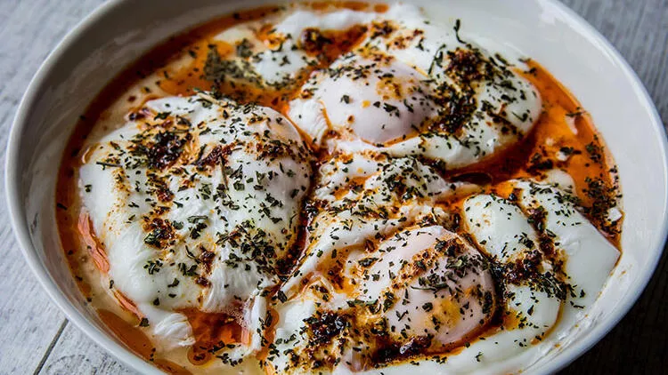

Cilbir

Description
This one is called as "Çılbır" which is usually served as part of a breakfast. Not commonly known by many people but it is one of the hidden gems within Turkish cousine to start off a great day.
Although the prep time is considered longer than the other egg-based dishes, Cilbir has much more texture to offer for your taste.
Ingredients
For the Yogurt Spread
- 1 cup Turkish yogurt, at room temperature
- 1 clove garlic
- ½ teaspoon freshly ground black pepper
- 1 pinch cayenne pepper
- 2 ½ tablespoons finely chopped fresh dill, or to taste
For the Aleppo Butter
- ½ stick unsalted butter
- ¼ teaspoon ground cumin
- ½ teaspoon smoked paprika
- 1 tablespoon Aleppo chili flakes
For the rest
- 1 tablespoon white vinegar, or as needed
- 4 large eggs
- 1 pinch sea salt
Steps
- Spoon yogurt into a medium bowl. Grate in garlic and mix to combine. Season with salt, pepper, and cayenne. Add dill and mix thoroughly. Set aside at room temperature
- Melt butter in a saucepan over medium heat; heat until bubbles begin to burst. Add cumin, paprika, and chili flakes. Stir until color is uniform, then turn off heat and let spices infuse.
- Grind parsley and jalapeno together in a mortar. Season with salt, drizzle in olive oil, and stir to combine.
- Fill a large saucepan with 2 to 3 inches of water and bring to a boil. Reduce heat to medium-low, pour in vinegar, and keep the water at a gentle simmer. Crack an egg into a small bowl then gently slip egg into the simmering water, holding the bowl just above the surface of water. Repeat with the remaining eggs. Cook eggs until the whites are firm and the yolks have thickened but are not hard, 2 1/2 to 3 minutes. Remove the eggs.
- Dollop yogurt mixture onto serving plates. Use the back of a spoon to spread yogurt out into a bed for the eggs, carving ridges into the top to catch the oil